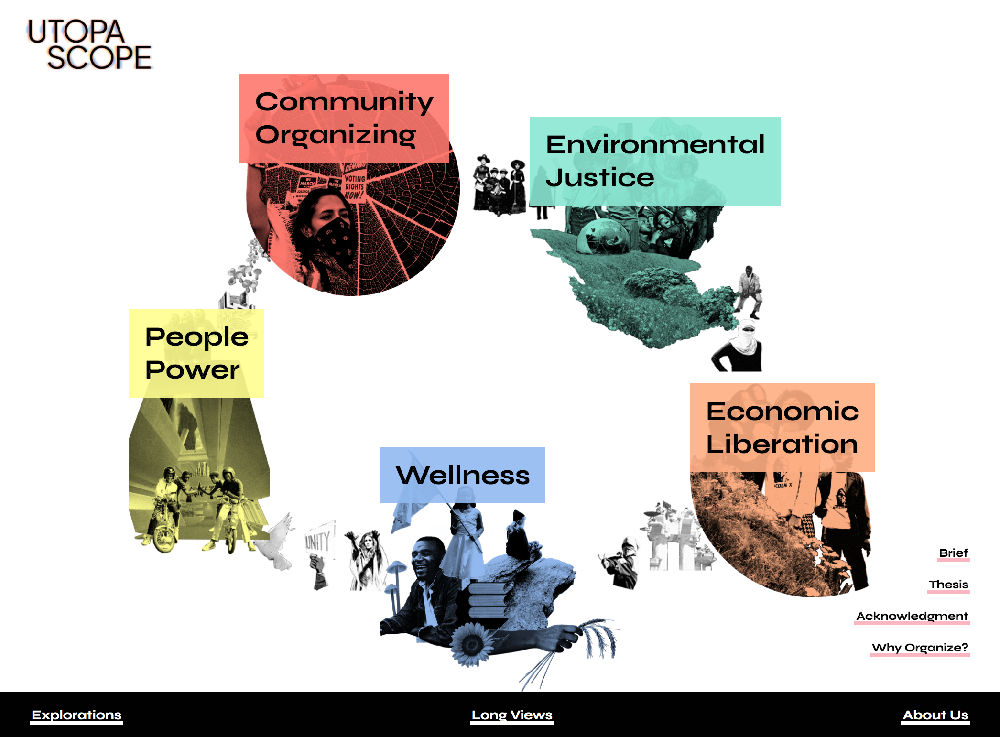
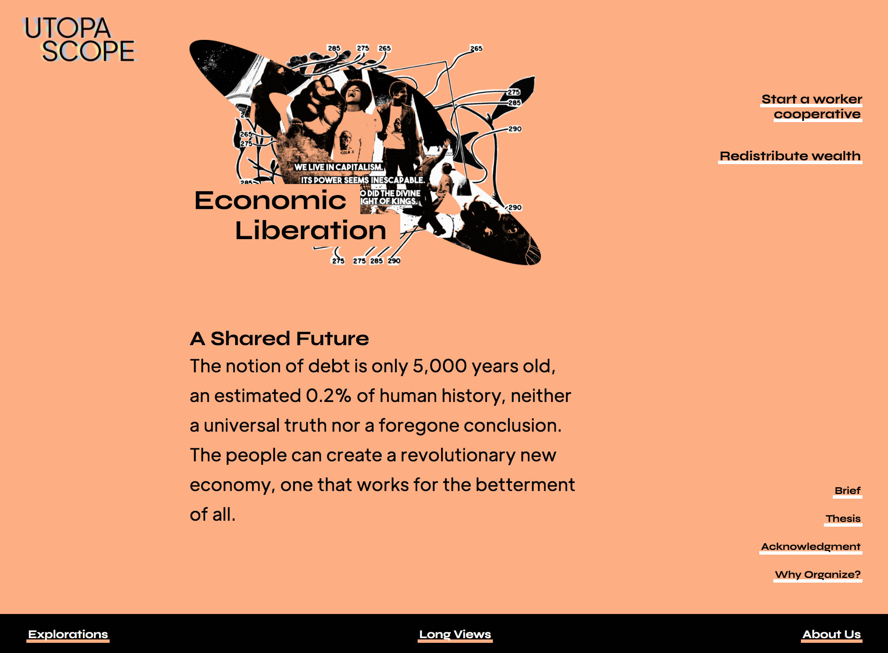

FOR IMMEDIATE RELEASE
Contact Information
Design Activist Institute designactivist@protonmail.com designactivistinstitute.org
August 30, 2021
Activist Design Collective Rejects a Return to “Normal,” Calls on the Community to Imagine a Better World … and Then Build It
The Design Activist Institute, a Philadelphia-based design collective, has been spending the pandemic documenting a shared dream of a more just and equitable future, via a project called Utopascope: an interactive website, educational resource, and organizing platform. The co-creative, community-led, living project collects visions of better futures from dreamers, workers, rebels, and thinkers, transforming them into pragmatic organizing practices in order to start building that tomorrow today.
The Institute seeks involvement from the community in a continuous exchange of information and ideas through the project: new conversations, practices, and educational resources. The community will decide on an actionable, real-world initiative driven by community needs and input — ranging from organizing against fascists, to creating commons councils, to fighting for reparations — to be facilitated by the Institute.
Collective consciousness will be the guiding force of direct democracy. — Jason Killinger
How might civilization be driven by cooperation rather than competition? How might all the people of the world unite in pursuit of human progress, discovery, and exploration instead of hazardous, useless work that only serves the already wealthy? As activists, community organizers, revolutionaries, and designers, the Design Activist Institute seeks to answer these questions and more, and to build new systems to replace all that is not working in society today. How might we?
Visit utopascope.com to view the project and vote on community organizing practices before June 1, 2022, follow @designactivistinstitute for updates, or contact the design collective at designactivist@protonmail.com to make suggestions, submit new content, or ask questions. The Design Activist Institute welcomes all whose liberation is bound together.

 Support for Utopascope was provided by the Philadelphia Cultural Fund.
Support for Utopascope was provided by the Philadelphia Cultural Fund.